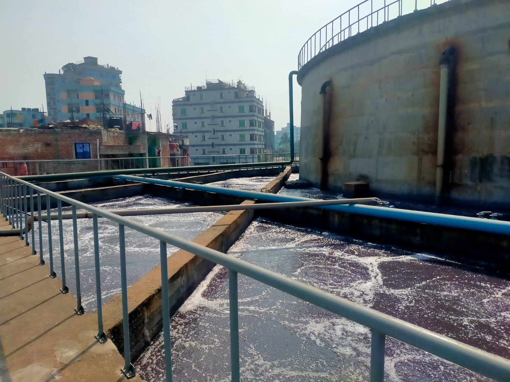

Water care
Effluent is treated before discharge. Rinsing and liquor ratio are managed to cut freshwater use per meter.
- Primary and secondary ETP
- Metered process water
- Reuse where it is feasible
Home Sustainability
Responsibility
Responsible operations. Measured at the mill.
Spinning, weaving, and finishing in Narayanganj — with targets for water, energy, chemistry, and waste that buyers can request in writing.

Effluent is treated before discharge. Rinsing and liquor ratio are managed to cut freshwater use per meter.
Heat is recovered on the finishing line, and loom and utility loads are tracked by shift.
Dyestuffs and auxiliaries are held to an approved list, with MRSL screening and safe-handling practice.
Yarn and fabric scrap are separated, and export packing is tightened so less material leaves as waste.
Our commitment
Targets are set each year for water, energy, and chemical compliance. The figures that apply to a program are shared when a buyer requests the profile.
Sustainability is a mill practice. We share the record with buyers who ask for it.
Request the profile